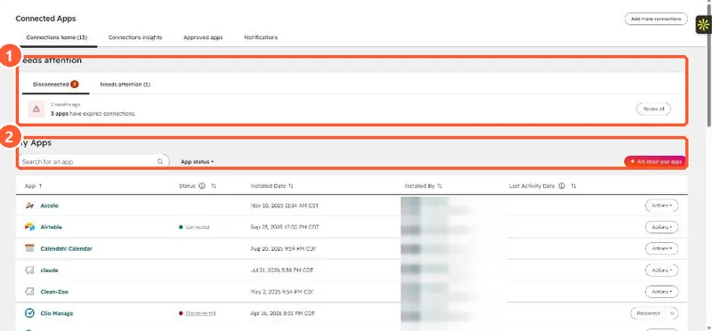

Short answer
Salesforce integration settings show API call usage and a Sync errors section. HubSpot's KB says you can bulk resync 100 errors at a time. For more, import the records from Salesforce or update a mapped property so they sync again. For one record, use Actions > Resync on its Salesforce sync card, after checking that it meets the inclusion segment. If the integration was suspended, it can look connected while nothing syncs, so check for a suspension first.
1. Spot the problem
Connected Apps lists integrations that need attention. In my demo portal the Needs attention panel shows three apps with expired connections. Salesforce is not installed there, so its own settings page is not shown.


2. Suspension first
HubSpot says a suspended integration may still appear connected while it cannot retrieve Salesforce data, which can stop records syncing and cause missing campaign data. Fix the suspension before resyncing, or the resync fails the same way. You can turn on email notifications for suspensions.
3. Push the records through
- Up to 100 errors: bulk resync from the Sync errors section.
- More: import from Salesforce, or update a mapped property on the affected records.
- One record: the Salesforce sync card's Actions, Resync. If the app was installed after October 7, 2025, an admin must add that card to the record sidebar first.